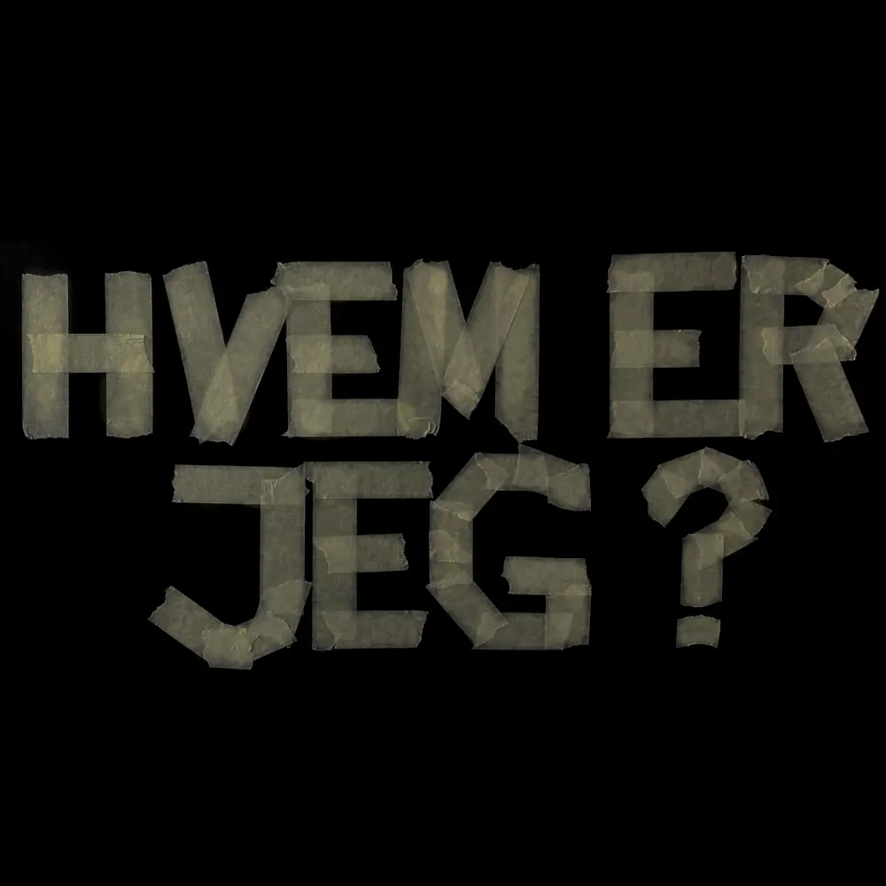

Om mig:
Jeg hedder Emma Sofie Munch og er 23 år.
Jeg er vokset op i Sorø, men flyttede til København den dag, jeg fik studenterhuen på. Da jeg voksede op, kunne jeg ikke lide at bo i Sorø.
Jeg følte mig begrænset og klaustrofobisk – som om det var en papir-by fyldt med spøgelsesmennesker. Men nu kan jeg mærke en indre ro, som jeg ved kommer fra min opvækst tæt på naturen. Det har formet mig, og jeg har en tryghed i naturen, som jeg håber at bære med mig resten af livet.
Samtidig elsker jeg København og især Nordvest, hvor jeg bor med mine tre bedste veninder.
Byen giver mig følelsen af, at der hele tiden sker noget nyt og spændende.
Lige nu er min tema-sang til livet “Innerbloom” af RÜFÜS DU SOL – et udtryk for, at jeg befinder mig i et flydende og usikkert stadie, men også et af de mest spændende perioder i mit liv.
Til hverdag studerer jeg til multimediedesigner på KEA og arbejder på Creative Space. Når jeg er hjemme, bruger jeg tid på at male og læse. Hvis jeg har brug for fart, tager jeg min cykel og kører, til jeg ikke kan mere.
Jeg svømmer også – ikke så meget for træningens skyld, men fordi vand er noget af det bedste, jeg kan forestille mig. Bare tanken om at tage et hovedspring ned i vandet gør mig glad.
Kreativitet har altid været en vigtig del af mit liv. Det er min måde at udtrykke mig på og finde et sprog, når ord ikke rækker.
Med min portfolio vil jeg vise, hvem jeg er som person og designer. Jeg håber, at mit site bliver modtaget som både sårbart og modigt, og at det giver en forståelse af, hvad jeg synes er spændende ved at være multimediedesigner. Samtidig vil jeg gerne vise de færdigheder, jeg har lært og øvet gennem mit første semester.

Cv:
Det hele startede, da jeg tog på efterskole.
Jeg gik på Højer Design Efterskole, og det var her, jeg for alvor fik interessen for det grafiske og digitale – især plakater og digitalkunst.
På min linje, Design og Innovation, udforskede jeg kreative projekter, og som valgfag havde jeg mode, fordi jeg dengang troede, jeg skulle være modedesigner.
Efterskolen var noget helt særligt, og vi rejste meget. Jeg deltog blandt andet i Fashion Week i København, Berlin og San Francisco, og jeg var så heldig at få udstillinger i Dubai og Seoul.
Herhjemme har jeg også udstillet lidt, blandt andet på Tønder Kunstmuseum.
Skolen gav mig mange spændende muligheder. Jeg lavede kampagnefilm for en kommune om alkohol i hjemmet og designede logoer for forskellige virksomheder.
De oplevelser har været med til at forme mig og min vej frem til, hvor jeg er i dag.
Efter efterskolen tog jeg en STX på Sorø Akademi, hvor jeg samtidig arbejdede som svømmeinstruktør og livredder.
I mine tre sabbatår rejste jeg så meget som muligt og besøgte steder som Sri Lanka, Indonesien, Marokko, Tenerife, Portugal og Nicaragua.
Det, de alle havde til fælles, var fantastiske bølger.
Jeg brugte det meste af min tid på at surfe og blev undervejs både surfinstruktør og tatovør, hvilket hjalp med at få det hele til at løbe rundt.
På mine rejser deltog jeg også i yoga-retreats og forskellige ceremonier, hvor jeg prøvede at lære mig selv og andre bedre at kende.
I 2024 valgte jeg at tage hjem og skabe lidt mere struktur i mit liv. Jeg startede på multimediedesigneruddannelsen og fik arbejde hos Creative Space, hvor jeg fortsat har mulighed for at udfolde min kreativitet.